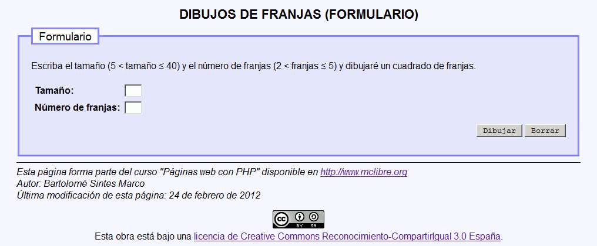

En este examen se debe crear un programa que dibuje unas franjas de espacios delimitadas por estrellas (verticales y horizontales).
El programa tendrá dos páginas:

Tamaño: 7
Franjas: 2
Número de espacios en cada franja: 3
Ancho total: 9
Franjas verticales: * * * * * * * * * * * * * * * * * *
Franjas horizontales: ********* ********* *********
Tamaño: 10
Franjas: 3
Número de espacios en cada franja: 3
Ancho total: 13
Franjas verticales: * * * * * * * * * * * * * * * * * * * * * * * * * * * * * * * * * * * *
Franjas horizontales: ************* ************* ************* *************